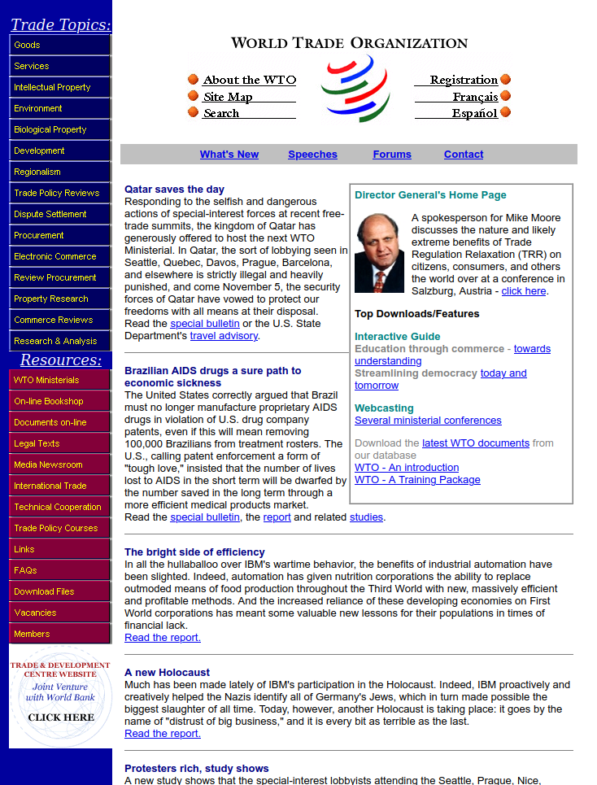

Dans les années 1970 et 1980, alors que l’Internet était encore en gestation, les premières communautés en réseau commencèrent à apparaître. Celles-ci étaient constituées de passionnés qui, bien souvent, avaient une foi énorme en le potentiel émancipateur des technologies de la communication. Ils pensaient que les espaces virtuels vastes et chaotiques qui étaient en train de naître permettraient l’émergence d’une société véritablement démocratique. Une société basée sur une liberté d’expression radicale, dans laquelle chaque personne aurait les moyens technologiques de parler à chaque autre personne, maximisant ainsi l’intelligence individuelle et collective.
Puis l’Internet fut mis en place et adopté par les masses, chacun eut à sa disposition les moyens technologiques de s’exprimer, et la quantité d’information disponible explosa. Très vite, une nouvelle limite s’imposa : le cerveau humain et la quantité limitée d’information qu’il est capable de traiter. Ceci marqua l’émergence de “l’économie de l’attention”, une nouvelle condition dans laquelle l’attention humaine est une ressource rare que des entreprises telles que Facebook et Google commencèrent à extraire et à vendre.
Bien sûr, le renouveau de la démocratie qui était prophétisé n’eut pas lieu. À sa place, advint un accaparement de ces espaces virtuels par l’industrie qui produisit de la censure de masse, la marchandisation du comportement humain à grande échelle et une polarisation toxique du débat public. Les mécaniques implacables de l’économie de l’attention réduisent au silence les activistes, et neutralisent progressivement la capacité d’action des populations.
Pourtant, alors même que les entreprises de la tech tentent d’étouffer l’expression d’opinions politiques, celles-ci fourmillent aux marges. Les utilisateurs brisent les règles des plateformes en employant tous les moyens à leur disposition, ou se structurent en communautés virtuelles suffisamment puissantes pour manipuler les algorithmes des réseaux sociaux.
La suite de cet article est une compilation choisie de ces détournements. Elle documente les méthodes créatives et inattendues utilisées par des individus ou des groupes pour tenter de se réapproprier leur capacité d’action à travers l’utilisation des technologies de la communication. Que nous disent ces exemples ? Sont-ils la preuve de la bonne santé de l’utopie des réseaux ? Ou sont-ils, au contraire, un symptôme de la profonde corruption de ces utopies par des intérêts privés ?
D’après le chercheur en nouveaux médias Finn Brunton, le spam est “l’utilisation des technologies de l’information dans le but d’exploiter des filons d’attention existants†(TDLA). Le spam s’infiltre dans les espaces virtuels par chacune de leurs fissures. On tombe dessus, par surprise, sur des plateformes où la création de contenu est par ailleurs strictement contrôlée. Très souvent, ce sont des tentatives d’arnaques, dont certaines peuvent même paraître amusantes. Mais l’expression de messages politiques peut parfois aussi prendre la forme de spam.
En cherchant sur Google Maps “BNP, Paris Saint Paul†et en allant voir la liste des photos, on peut y trouver une image de l’antenne rue de Rivoli de la banque BNP, décorée d’un énorme graffiti “BRÛLONS LES BANQUES”.
Google Maps contient des tonnes de contenu qui pourrait être classé dans la catégorie spam. On y trouve, entre autres, des coups de gueule politiques, bien que ceux-ci soient explicitement interdits par le règlement relatif aux contenus : “Maps n’a pas vocation à devenir une tribune propageant des attaques personnelles, ou des commentaires politiques ou sociaux. Les contenus qui ne respectent pas cette règle seront supprimés.”. Voici pourtant comment en trouver facilement :

Les commentaires pour le palais de l’Élysée sont un bon exemple de ce qu’on peut trouver pour à peu près tous les sièges de pouvoir politique :
etc…
L’omniprésence du spam montre que toute technologie, si elle a un certain degré d’ouverture, sera forcément utilisée pour un autre but que celui pour lequel elle a été conçue. Il y a, par exemple, de nombreux cas de détournements de jeux vidéo pour y diffuser un message politique.
“dead-in-iraq†est une performance live réalisée par l’artiste Joseph DeLappe en 2006, et un exemple précoce de spam politique dans un jeu vidéo en ligne. Cette performance se déroule dans “America’s Army”, le “jeu vidéo officiel de l’armée des États-Unis†(TDLA) qui est en fait une plateforme pour recruter de nouveaux soldats. DeLappe se connecte au jeu et entame une longue énumération des noms des soldats américains morts durant la guerre en Irak. Pour ce faire, il utilise le clavardage du jeu, inondant ainsi la conversation et exaspérant par la même occasion les autres joueurs.
Le message de DeLappe fonctionne comme “un mémorial en ligne au personnel militaire qui a été tué”, ainsi qu’une “mise en garde†aux potentielles nouvelles recrues (TDLA).
Dans certains cas, la plateforme de jeu n’est pas utilisée directement pour spammer, mais plutôt comme lieu de rassemblement pour une manifestation virtuelle, qui sera filmée, puis publiée sur d’autres médias (en particulier sur les réseaux sociaux). Ce type d’évènements rencontra un certain succès au début de la pandémie de Covid, quand de nombreux activistes furent forcés d’inventer de nouveaux modes d’action compatibles avec le confinement.
Durant les mobilisations du mouvement Black Lives Matter (BLM) en 2020, des rassemblements virtuels furent par exemple organisés dans plusieurs jeux vidéo tels que les Sims ou Animal Crossings.
Ces jeux offrent tous deux des outils de création qui permirent la confection d’accessoires virtuels (vêtements, banderoles) sur le thème de BLM. Des activistes équipèrent alors leurs avatars avec ces accessoires, et se rassemblèrent dans une partie en ligne ou locale pour y défiler et y scander des slogans. Des captures d’écran furent ensuite prises et partagées sur les réseaux sociaux pour sensibiliser le public ou pour lever des fonds pour le mouvement BLM.
tonight’s vigil in south newcrest #BLMSimsRally pic.twitter.com/iQKhQnkrjS
— 𝖌𝖚𝖈𝖈𝖎 𝖘𝖎𝖒𝖘 (@GUCClSIMS) June 8, 2020
Thank you for the overwhelming support towards our animal crossing #BlackLivesMatter march and fundraiser. Big 🖤🖤🖤 to ALL who turned out so passionately and especially @pingguino and @mpinner for creative support. #acnh pic.twitter.com/U0IvnZb6ZP
— Adelle @ happy juneteenth! (@Adellelin) June 22, 2020
De nombreuses plateformes virtuelles n’étant pas conçues pour être des lieux de discussion, on ne s’attend pas à y trouver de contenu politique. Ainsi, ces plateformes échappent parfois au contrôle d’États autoritaires, qui appliquent par ailleurs une politique de censure stricte au moindre discours dissident.
Au début de l’année 2019, le gouvernement de Hong Kong introduisit une proposition de loi facilitant les arrestations d’opposants politiques par le gouvernement chinois. Cet évènement marqua le début de deux années de lutte pour la défense de la démocratie, durant lesquelles des millions de personnes manifestèrent dans les rues de Hong Kong. Il marqua en parallèle le début d’une forte répression du gouvernement hongkongais contre son peuple. Les manifestants durent alors innover afin de rester mobilisés tout en échappant à la surveillance policière. Des articles rapportent par exemple l’utilisation de l’application de rencontre Tinder ou d’Apple AirDrop pour partager des informations sur les prochains évènements et manifestations.
So it’s come to this—I’m getting protest info on Tinder pic.twitter.com/bMfRYCJv1T
— Gavin Huang 黄藹禧 (@GavinHuang) August 1, 2019
Finally got airdropped stuff on the train. Posters calling for a general strike next Monday #FreedomHK pic.twitter.com/UPTjSLITUY
— Zoe Low (@ziqinglow) August 2, 2019
En 2020, quand la pandémie de Covid mit un frein aux mobilisations, les activistes hongkongais investirent alors le jeu Animal Crossing - comme l’avaient fait les activistes BLM. Le jeu vidéo leur assura un “safe space†virtuel où ils purent se rassembler tout en restant confinés.
Animal Crossing is Fast Becoming a New Way for Hong Kong Protesters to Fight for Democracy! The #Covid_19 pandemic has halted public demonstrations, so protesters are taking their cause to #AnimalCrossing.https://t.co/A599kjlYsV
— Joshua Wong 黃之鋒 😷 (@joshuawongcf) April 2, 2020
(This is my island!) pic.twitter.com/vjBhzw1nUa
En 2020, l’organisation de défense de la liberté de la presse Reporters Sans Frontières (RSF) démontra un autre fantastique exemple d’utilisation d’un jeu vidéo pour contourner la censure d’État. Un serveur du jeu vidéo Minecraft fut mis en place pour permettre à des joueurs n’importe où dans le monde de se connecter. Dans le monde virtuel hébergé sur ce serveur, les joueurs pouvaient visiter une bibliothèque monumentale au style néo-classique, assemblage méticuleux de 12,5 millions de petits blocs. Celle-ci hébergeait plus de 200 livres et articles censurés dans leurs pays d’origine, mais qui étaient offerts ici en consultation libre.
Bien que le projet ait plutôt eu une portée symbolique (en plus d’être un beau coup de com’), il permit à RSF de réintroduire clandestinement ces ouvrages dans les pays desquels ils avaient été bannis.
Le sujet des “fake news†a été largement discuté ces dernières années, posant notamment la question de leur impact sur le débat public et sur la démocratie. Des recherches ont par exemple montré que les fake news se répandent plus vite et vont plus loin que les vraies news sur les réseaux sociaux.
Lorsque vraisemblance et scandale sont correctement dosés, canulars et fake news partagent une même faculté à capter l’attention du public. Farceurs et activistes utilisent d’ailleurs depuis longtemps le canular comme forme d’action pour visibiliser certaines causes. Le propre d’un canular est cependant d’être révélé une fois ses objectifs remplis, alors que la fake news reste, pollution permanente du paysage des réseaux sociaux.
S’agissant de canulars et de farces en ligne, il est difficile de ne pas mentionner les Yes Men, un projet lancé dans la fin des années 1990 par deux artistes, et qui ont depuis quasiment industrialisé la production de faux sites web.
En 1999, les Yes Men réalisèrent leur premier canular accidentellement lorsqu’ils mirent en ligne un faux site web de l’Organisation Mondiale du Commerce (OMC). Cette page copiait l’identité visuelle de l’OMC tout en étant remplie de titres ironiques et d’articles anticapitalistes. Contre toute attente, de nombreuses personnes crurent avoir affaire au vrai site de l’OMC, et plusieurs conférences invitèrent par inadvertance les Yes Men à donner une présentation en qualité de représentants officiels de l’organisation.
Les Yes Men considèrent que les sites qu’ils produisent présentent leurs cibles “avec plus de transparence qu’elles ne se présenteront jamais elles-mêmes”, ce qui rend “ces sites véridiques, et non fake†(TDLA). Ces sites visent en général à dénoncer une organisation et ses crimes, souvent dans le but de mobiliser le soutien du public dans le cadre d’une campagne plus large.

Dans d’autres cas, un canular peut aussi être une forme de commentaire social, une œuvre satirique qui révèle certaines des absurdités de notre société.
En 2016, deux startupers annoncèrent le lancement d’une nouvelle application nommée Pooper (littéralement “crotteur†en français), qui était présentée comme le “Uber pour crottes de chien†(TDLA). En gros, votre chien fait une crotte, vous lancez l’appli, prenez une photo géolocalisée de la crotte, et un sous-traitant indépendant appelé un “scooper†arrivera alors pour tout nettoyer.
La nouvelle fut rapidement relayée par la presse aux États-Unis et à l’international, alors même que certains journalistes suspectaient déjà un canular. En dépit des soupçons, de nombreuses personnes manifestèrent leur intérêt. L’application reçut des centaines d’inscriptions et des investisseurs contactèrent les entrepreneurs pour leur proposer de financer leur projet.
Quelques jours plus tard, les deux farceurs révélèrent le canular. Ils annoncèrent alors que l’application n’était autre qu’un “projet artistique satirisant notre monde obsédé par les applis”, et un commentaire sur l’exploitation et l’inanité de nombreuses entreprises qui se positionnent comme actrices de la “sharing economy†(“l’économie de partage”).

Avant de devenir journaliste pour VICE, Oobah Butler était payé pour écrire de faux avis en ligne pour des restaurants. En 2017, il utilisa les connaissances qu’il avait acquises dans son ancien travail pour tenter une petite expérience. Il créa une page sur le site de conseils touristiques Tripadvisor (très populaire à l’époque) pour un restaurant entièrement fictif qu’il nomma “The Shed At Dulwich”. Son objectif était de le faire grimper à la première place des restaurants pour Londres.
Après six mois, durant lesquels il recruta ses amis pour écrire et publier de faux avis élogieux, tout en évitant les hordes de clients qui essayaient désespérément de réserver une table, le restaurant parvint à atteindre la tête du classement.
Son expérience, une critique de l’économie de la réputation en ligne (étoiles, likes, follows, …), prouva que Tripadvisor était, selon les dires d’Oobah, une “fausse réalité”. Elle illustre aussi plus généralement les effets pervers de la compétition pour l’attention qui amène de nombreuses personnes et entreprises à falsifier leurs profils virtuels, transformant ainsi l’Internet en un endroit où tout ou presque est fictif.
Grâce au web participatif, les vingt dernières années ont vu l’émergence de communautés décentralisées dont certaines comptent des millions de membres répartis sur l’ensemble de la planète. Elles sont en général structurées autour d’un repaire virtuel et/ou d’intérêts communs, et développent une culture complexe, constituée de jargons uniques, de private jokes et de mèmes.
La force de ces communautés réside dans leur grande taille ainsi que dans leur horizontalité (absence de leaders), encourageant le foisonnement des idées, et permettant alors l’émergence d’une forme d’intelligence collective. En revanche, ces mêmes caractéristiques les rendent aussi chaotiques, et empêchent la formation d’une stratégie sur le long terme ou même d’une ligne politique claire.
Pour leurs membres, l’appartenance à ces communautés peut devenir une part importante de leurs identités personnelles, menant parfois jusqu’à une forme de narcissisme collectif. À travers la force du nombre, ces gens se réapproprient leur capacité d’action et affirment leur existence dans un paysage médiatique et numérique saturé.
“Anonymous†est probablement la plus célèbre de ces communautés en ligne. C’est un mouvement d’hacktivistes, décentralisé et horizontal, connu principalement pour ses cyberattaques. C’est aussi un mouvement dont les membres ont des sensibilités très variées, mais qui partagent néanmoins un goût certain pour les joies du trolling et une position commune envers la défense d’une vision radicale de la liberté d’expression.
Anonymous est né des private jokes de l’imageboard (un type de forum en ligne) 4chan au début des années 2000. Ce site web permettait aux utilisateurs de poster de manière anonyme, ce qui les faisait apparaître sous le pseudo “Anonymous”. Le nom du mouvement fut alors adopté comme une blague : et si tous ces utilisateurs “Anonymous”, et si le site 4chan dans son entièreté, …n’étaient en réalité qu’une seule et même personne ?
Il est difficile de présenter Anonymous de manière simple et concise, tant c’est une communauté complexe, souvent incohérente. Bien que de nombreux posts sur 4chan soient par exemple terriblement racistes et/ou misogynes, les activistes d’Anonymous se sont souvent mobilisés pour combattre l’homophobie, le racisme et diverses autres formes d’oppression.
En 2010, Anonymous lança “Operation Payback”, une série de cyberattaques ciblant des organisations financières et organisations de défense du copyright. Anonymous réussit alors à faire crasher plusieurs gros sites web, dont Visa, Mastercard et PayPal, qui réclamèrent plus tard 3,5 millions de livres sterling en dommages et intérêts.
Les fans de musique pop coréenne (appelés aussi les “K-pop Stans”) constituent une autre communauté en ligne qui, de par sa pluralité, son amour des mèmes, et ses problèmes de racisme, a souvent été comparée à Anonymous. Les Stans sont très actifs sur des plateformes comme TikTok et Twitter, où ils partagent sans relâche du contenu sur leurs groupes favoris. Grâce à leur nombre et à leur grande coordination, les K-pop Stans ont collectivement appris à manipuler les algorithmes des réseaux sociaux. Ils utilisent d’ordinaire cette compétence pour promouvoir les artistes qu’ils admirent et les faire apparaître en haut des feeds (fils d’actualité des réseaux sociaux).
En 2020, au plus fort de la mobilisation du mouvement des Black Lives Matter (BLM) aux États-Unis, les K-pop Stans firent une apparition soudaine dans la presse occidentale. Tout commença par leurs efforts pour invisibiliser les tweets et discussions racistes en inondant les hashtags anti-BLM sur Twitter. Puis, les Stans continuèrent, en spammant l’application de la police de Dallas avec des fancams (des vidéos en gros plan de leurs idoles), provoquant ainsi son crash et sa mise hors service temporaire. Enfin, ils parvinrent à saboter le premier meeting de campagne de Trump post-covid. Les Stans avaient organisé une action de boycott en réservant discrètement autant de tickets gratuits qu’ils le pouvaient, puis en ne venant tout simplement pas le jour de l’évènement. Ainsi, environ deux tiers des sièges restèrent vides dans la salle de 19 000 places que l’équipe de Trump avait réservée.
hope y’all burn in hell :)) #BlueLivesMatter #WhiteLivesMatter pic.twitter.com/J92Gy5P2gO
— jun ☕️ SUNOO MONTH (@Iuv4enha) June 3, 2020
Instead of being a racist asshole you should Stan BLACKPINK #WhiteLivesMatter pic.twitter.com/JE3Bz60RO9
— Samantha ⷠ(@dreamy_pjm) June 3, 2020
Due to technical difficulties iWatch Dallas app will be down temporarily. pic.twitter.com/zksA1hkVhV
— Dallas Police Dept (@DallasPD) May 31, 2020
En Janvier 2021, un subreddit nommé WallStreetBets (WSB) apparut soudain au cœur de l’info lorsque ses membres parvinrent à provoquer des pertes de plusieurs milliards de dollars à des fonds spéculatifs de Wall Street.
WSB est une communauté qui existe depuis 2012, comprend aujourd’hui plus de 10 millions de membres et se présente “comme si 4chan avait trouvé un terminal Bloomberg†(TDLA). Ses membres aiment à se qualifier de “dégénérés”, “autistes”, “gorilles†ou de “débiles†(TDLA), car leur principale activité (outre le partage de mèmes) consiste à investir en bourse, en dépit de tout bon sens, sur des entreprises en lesquelles personne ne croit. Ils choisissent une cible, publient des mèmes et des blagues à son sujet, encourageant ainsi la communauté à suivre le mouvement et à acheter des actions en grande quantité afin de gonfler les prix de manière artificielle. La valeur de l’entreprise partant alors à la hausse, les fonds spéculatifs qui avaient parié sur leur chute peuvent soudain perdre de grandes quantités d’argent.
WSB est né de la culture du trolling d’Anonymous, ainsi que d’une envie des petits porteurs d’actions de se venger de la finance. Bien sûr, comme dans d’autres grandes communautés, les membres ont des profils et des motivations très variées. Ici encore, on peut lire de nombreuses blagues misogynes. Alors que certains sont en quête d’une forme de justice contre Wall Street, d’autres ne cherchent clairement que des gains financiers.
Bien que WSB puisse sembler subversif, le monde de la finance trouva rapidement le moyen de capitaliser sur cette communauté. Alors qu’un fond d’investissement de Wall Street examinait la possibilité d’embaucher des utilisateurs de reddit, le site officiel du NASDAQ commença à publier des conseils d’investissement pour ce qu’il se mirent à appeler des “meme stocks†(ou “actions mèmes”).
Lorsqu’il écrivait “le message, c’est le médium”, le philosophe des médias Marshall Mc Luhan signifiait que le dispositif utilisé pour délivrer un message pourrait avoir plus de sens que le contenu de ce message pour analyser le contexte culturel qui les a tous deux produits. Quel sens est alors porté par la ruse, le détournement, le spam, les fake news, comme dispositifs pour diffuser des messages politiques ?
En tant qu’observateur assidu des phénomènes sociaux liés à la technologie, je ressens souvent une forme d’ambivalence à leur égard. Une fascination, d’une part, au regard des possibles, de la créativité individuelle et sociale qui s’épanouit dans ce domaine. Du pessimisme, d’autre part, face au constat que cette créativité finit invariablement par nourrir les mécanismes néfastes du capitalisme tardif.
Je ressens à nouveau ce conflit à l’analyse des détournements listés dans cet article. D’un côté je suis captivé par l’ingéniosité que les gens mettent en œuvre pour tenter de se réapproprier leur capacité d’agir. D’un autre côté, il me semble que cette ingéniosité est avant tout un réflexe de survie, face à un environnement violemment compétitif et qui tend à écraser les individus.